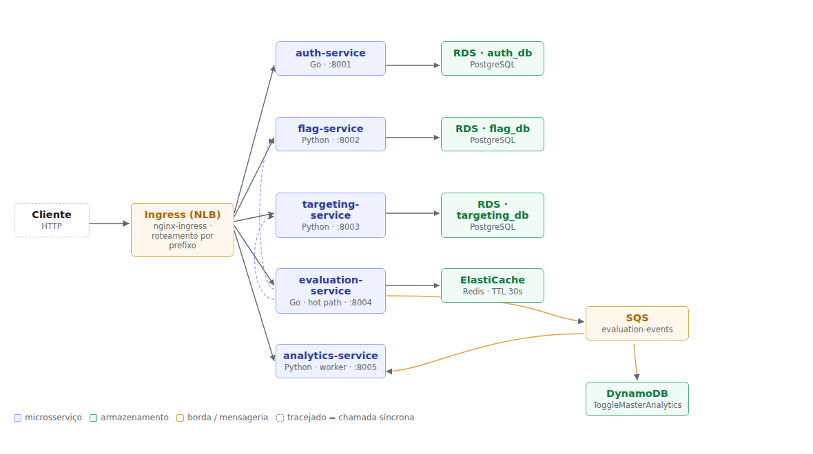
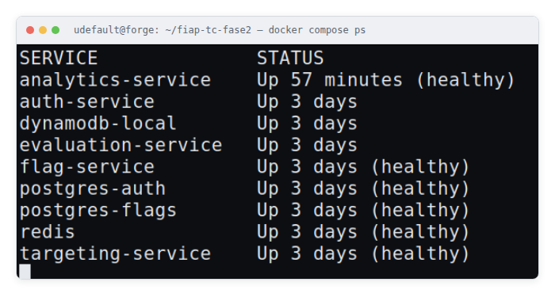
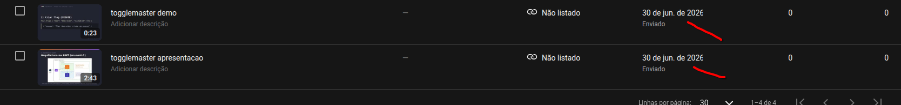

Na Fase 1, entreguei o ToggleMaster como um MVP monolítico: uma aplicação Flask com PostgreSQL, publicada numa EC2 com banco RDS privado. Já naquele relatório eu tinha apontado candidatos naturais a serem extraídos como serviços independentes — um de avaliação de flags, de leitura pesada e que se beneficiaria de cache próprio; um de administração das flags; e um de autenticação. É essa separação que que eu executo agora, nesta Fase 2.
O motivo é o gargalo que eu já esperava desde a Fase 1: escalabilidade grosseira, ou seja, não dá pra escalar só o caminho de leitura sem escalar a aplicação inteira junto. Com a plataforma validada e a base de clientes crescendo, a diretoria fictícia da DevOps Solutions Inc. — o cenário que o enunciado propõe — decidiu que era hora de reescrever o sistema como um conjunto de microsserviços distribuídos, orquestrados em Kubernetes. Coube a mim tocar essa reescrita.
Meu trabalho nesta fase foi conteinerizar os cinco microsserviços que recebi prontos da equipe
de arquitetura (auth-service, flag-service, targeting-service,
evaluation-service e analytics-service), provisionar a infraestrutura de
nuvem que eles precisam, e implantar tudo num cluster Kubernetes com um único ponto de entrada e
escala automática.
eksctl create cluster, que já cuida de gerar as IAM roles corretas sozinho, sem eu
precisar depender de uma role fixa como a LabRole do AWS Academy. Isso me deixou
livre pra usar IRSA sem restrição, tanto no Ingress Controller quanto, de forma bem mais
granular, nos service accounts do evaluation-service e do
analytics-service (Seção 5.3).
Pra não misturar o trabalho com a minha estação pessoal, fiz todo o desenvolvimento numa VM dedicada (Ubuntu 24.04 sobre KVM/libvirt, 4 vCPU, 6 GB de RAM), provisionada inteira por cloud-init. Deixei Docker, kubectl, Helm, eksctl, AWS CLI e as ferramentas de carga já dentro dela — o ambiente inteiro é reconstruído do zero a partir de um único arquivo, sem eu precisar repetir nenhum passo manual se algo der errado.
Organizei a solução em duas camadas. O cluster Kubernetes orquestra os cinco microsserviços e expõe um ponto único de entrada pelo Ingress. Os serviços gerenciados da AWS cuidam da persistência, do cache e da mensageria. Não deixei nenhum estado vivendo dentro do cluster — é isso que mantém os pods descartáveis e permite escalá-los sem cuidado especial.
| Microsserviço | Responsabilidade | Persistência / Integração |
|---|---|---|
auth-service (Go) |
Autenticação e gestão de chaves de API | Amazon RDS (PostgreSQL) dedicado |
flag-service (Python) |
CRUD das definições de feature flags | Amazon RDS (PostgreSQL) dedicado |
targeting-service (Python) |
Regras de segmentação de público (JSONB) | Amazon RDS (PostgreSQL) dedicado |
evaluation-service (Go) |
Hot path — retorna a decisão true/false |
Amazon ElastiCache (Redis), publica eventos no SQS |
analytics-service (Python) |
Consome eventos da fila e grava dados de análise | Amazon SQS (consumidor), Amazon DynamoDB |
O tráfego externo entra por um Load Balancer que o Nginx Ingress Controller provisiona sozinho,
e é roteado por prefixo até o Service ClusterIP correspondente. O caminho que mais me
preocupou foi o do evaluation-service: primeiro ele consulta o Redis, e se der cache
miss, busca ao mesmo tempo a definição da flag no flag-service e a regra de
segmentação no targeting-service, junta os dois resultados, grava no cache com TTL de
30 segundos e responde. Só depois disso a decisão é publicada, de forma assíncrona, na fila SQS —
não deixo essa publicação seguerar a resposta ao cliente.
A avaliação em si é determinística: calculo um bucket de 0 a 99 a partir do hash SHA-1 de
user_id + flag_name. O mesmo usuário sempre recebe a mesma resposta pra mesma flag,
sem eu guardar estado por usuário em lugar nenhum — o que é essencial pra qualquer réplica poder
atender qualquer requisição, indiferente de qual pod respondeu da última vez.
Isolei cada serviço no seu próprio namespace, o que evita colisão de nomes de recursos e deixa RBAC e cotas configuráveis por área, de forma independente.

Escrevi um Dockerfile próprio pra cada microsserviço, com build multi-stage, separando o estágio de compilação do estágio de execução — assim nenhuma ferramenta de build sobra na imagem final.
Nos serviços em Go, compilo em golang:1.21-alpine e rodo a partir de
gcr.io/distroless/static-debian12:nonroot. Gero o binário estático
(CGO_ENABLED=0), com -trimpath tirando os caminhos da minha máquina de
build e -ldflags="-s -w" descartando símbolos e informação de depuração. A imagem
final não tem shell nem gerenciador de pacotes — não sobra nenhum binário além da própria
aplicação, o que reduz bastante a superfície de ataque.
Nos serviços em Python, uso python:3.11-slim nos dois estágios: o primeiro monta
um virtualenv, e só ele atravessa pro estágio final — deixo o pip e os artefatos de
compilação pra trás. A execução roda com um usuário não-root (uid 10001), sob Gunicorn.
# evaluation-service — Dockerfile multi-stage
FROM golang:1.21-alpine AS build
WORKDIR /src
COPY go.mod go.sum ./
RUN go mod download # camada separada: só invalida se as dependências mudarem
COPY . .
RUN CGO_ENABLED=0 GOOS=linux go build \
-trimpath -ldflags="-s -w" \
-o /out/evaluation-service .
FROM gcr.io/distroless/static-debian12:nonroot
COPY --from=build /out/evaluation-service /evaluation-service
EXPOSE 8004
USER nonroot:nonroot
ENTRYPOINT ["/evaluation-service"]
| Imagem | Tamanho final | Base do estágio de execução |
|---|---|---|
auth-service | 16,5 MB | distroless/static |
evaluation-service | 21,8 MB | distroless/static |
flag-service | 248 MB | python:3.11-slim |
targeting-service | 248 MB | python:3.11-slim |
analytics-service | 287 MB | python:3.11-slim |
Não me surpreendeu a diferença de mais de dez vezes entre Go e Python: o binário Go é autocontido e não precisa de runtime, enquanto as imagens Python carregam o interpretador e a biblioteca padrão junto.
Escrevi um docker-compose.yml que sobe os nove contêineres que o enunciado pede: os
cinco microsserviços e os quatro bancos.
| Contêiner | Porta | Função |
|---|---|---|
auth-service | 8001 | Chaves de API |
flag-service | 8002 | CRUD das feature flags |
targeting-service | 8003 | Regras de segmentação |
evaluation-service | 8004 | Hot path da decisão |
analytics-service | 8005 | Worker SQS → DynamoDB |
postgres-auth | — | Banco auth_db |
postgres-flags | — | Bancos flag_db e targeting_db |
redis | — | Cache do evaluation-service |
dynamodb-local | — | Tabela de eventos de analytics |
Como o enunciado pede duas instâncias PostgreSQL locais pra três serviços, fiz o
postgres-flags hospedar dois bancos logicos, criados já na inicialização do volume.
Montei os schemas direto dos próprios repositórios (services/*/db/init.sql) em vez de
copiar pra dentro do compose, pra não correr o risco de ter duas versões do mesmo schema saindo de
sincronia sem eu perceber. Na AWS a separação passa ser física, como conto na Seção 4.
Três decisões de configuração que tomei aqui merecem registro:
healthy (depends_on com condition: service_healthy),
o que evita falha de corrida no boot.analytics-service rodar com um único worker, de propósito. O consumidor
SQS inicia no import do módulo, então cada worker do Gunicorn abriria um consumidor
independente da mesma fila dentro do mesmo pod — com --workers 1 eu garanto a
relação 1 pod = 1 consumidor, e a contagem de réplicas passa a ser proporcional à vazão real
de mensagens. É essa premissa que sustenta a escala automática que descrevo na Seção 7.Depois de rodar docker compose up -d --build, os nove contêineres sobem e os
bancos reportam healthy. Testei o fluxo de ponta a ponta:
| Verificação | Resultado obtido |
|---|---|
| Health dos serviços | {"status":"ok"} nas portas 8001, 8002, 8003 e 8004 |
| Criação de chave de API | POST /admin/keys autenticado com a MASTER_KEY retornou uma
chave tm_key_… de 71 caracteres |
| Criação da feature flag | enable-new-dashboard criada com is_enabled: true |
| Criação da regra | {"type":"PERCENTAGE","value":50} gravada como JSONB |
| Avaliação de 8 usuários | 4 resultados true e 4 false — bate com a regra de 50%, e o
resultado é determinístico por user_id + flag_name |
| Cache | Chave flag_info:enable-new-dashboard presente no Redis; o log confirma
Cache MISS seguido de Cache HIT |
| DynamoDB Local | Tabela criada com chave de partição event_id (String) |

docker compose ps que tirei na minha própria VM.Provisionei toda a infraestrutura via AWS CLI (Opção B), na região us-east-1. Os
nós do cluster usam a IAM Role eksctl-togglemaster-nodegroup-togg-NodeInstanceRole, e
criei mais duas roles dedicadas via IRSA (Seção 5.3) pros pods que precisam falar com SQS e
DynamoDB.
| Recurso | Qtd. | Nome / Identificador | Configuração |
|---|---|---|---|
| Cluster Kubernetes | 1 | togglemaster | EKS 1.31 · us-east-1 · criado via eksctl create cluster --with-oidc |
| Managed Node Group | 1 | togglemaster-nodes | t3.medium · Min=1 / Desejado=2 / Máx=4 |
| Repositórios ECR | 5 | um por microsserviço, tag v1 | Imagens da Seção 3 publicadas e confirmadas com aws ecr list-images |
| RDS PostgreSQL | 3 | togglemaster-auth · togglemaster-flag · togglemaster-targeting |
db.t3.micro · PostgreSQL 16.4 · Single-AZ · --no-publicly-accessible |
| ElastiCache Redis | 1 | togglemaster-evaluation-cache | cache.t3.micro · Redis 7.1 |
| Tabela DynamoDB | 1 | ToggleMasterAnalytics |
Chave de partição event_id (String) · billing PAY_PER_REQUEST |
| Fila SQS Standard | 1 | togglemaster-evaluation-events |
Produtor: evaluation-service · Consumidor: analytics-service |
available/ACTIVE, confirmados via AWS CLI).eksctl, sem --vpc-* explícito, provisiona uma VPC nova pro cluster —
neste caso 192.168.0.0/16 — diferente da VPC padrão da minha conta
(172.31.0.0/16), que é onde eu já tinha criado o RDS e o ElastiCache. Só percebi
isso na prática quando os pods começaram a dar i/o timeout tentando falar com o
Redis: eram duas redes isoladas, sem rota entre si, e eu não tinha reparado que o
eksctl faz isso por padrão. Como os blocos CIDR não colidem, resolvi com VPC
Peering entre as duas, adicionando rota nas route tables dos dois lados — a rota inversa na VPC
padrão, e a rota direta na route table que as duas subnets públicas dos nós do EKS
compartilham, já que por padrão o eksctl não usa
--node-private-networking. Numa próxima rodada, prefiro apontar o
eksctl direto pras subnets da VPC padrão via
--vpc-private-subnets/--vpc-public-subnets, o que evitaria esse
peering todo — foi um retrabalho que eu poderia ter previsto se tivesse lido a documentação do
eksctl com mais calma antes de rodar o comando.
Com --no-publicly-accessible (que é o correto, e o que o enunciado pede), os
endpoints do RDS só resolvem DNS de dentro da VPC — eu sabia disso, mas só senti a consequência na
prática quando fui rodar as migrações de schema (db/init.sql de cada serviço): não
dava pra conectar direto da minha máquina de desenvolvimento, então subi um pod temporário com
postgres:16-alpine dentro do próprio cluster (kubectl run +
kubectl cp + kubectl exec -- psql) só pra rodar os três arquivos SQL.
Depois de criar cada recurso, anotei os endpoints, nomes de tabela e ARNs, e injetei tudo no
cluster como Secrets e ConfigMaps (Seção 5) — não deixei nenhuma credencial no código-fonte nem nas
imagens que publiquei no ECR. Uma coisa que precisei ter cuidado: o nome da tabela e a chave de
partição do DynamoDB não são escolha minha livre. O analytics-service já grava o item
usando event_id como partition key e lê o nome da tabela da variável
AWS_DYNAMODB_TABLE, então tive que provisionar a tabela respeitando exatamente esse
contrato — senão o worker só falharia em runtime, ao tentar gravar o primeiro evento.
Isolei cada microsserviço no seu próprio namespace, com os manifestos de Deployment, Service
(ClusterIP), Secret e ConfigMap aplicados via kubectl apply. As imagens
referenciadas nos Deployments apontam pros repositórios do ECR que publiquei na Seção 4, tag
v1. No estado final que consegui, os 9 pods ficaram Running e
Ready nos 5 namespaces.
Não coloco os valores reais neste relatório nem no repositório versionado — só a estrutura do manifesto:
apiVersion: v1 kind: Secret metadata: name: auth-db-credentials namespace: auth type: Opaque data: DATABASE_URL: [base64 — definido em tempo de deploy] MASTER_KEY: [base64 — definido em tempo de deploy]
Todas as Secrets seguem a codificação em base64 que o Kubernetes exige. Gero elas a partir de um
arquivo .env local que não versiono (fica fora via .gitignore) e só viram
YAML no momento do deploy.
GET /health, presente nos cinco serviços.
Ajustei o initialDelaySeconds pro tempo de boot de cada linguagem: os binários
Go respondem quase na hora, enquanto os serviços Python sob Gunicorn precisam de uma folga
maior.ResourceQuota de forma
independente por serviço.analytics-service, pelo motivo que já expliquei na
Seção 3.3 — é o que torna a contagem de réplicas uma medida fiel da capacidade de consumo da
fila.O evaluation-service e o analytics-service precisam de credenciais AWS
pra falar com SQS e DynamoDB. A role padrão dos nós do EKS
(AmazonEKSWorkerNodePolicy + AmazonEC2ContainerRegistryPullOnly) não traz
essas permissões, e deixei assim de propósito: se eu desse essa permissão ao node inteiro, qualquer
pod agendado ali herdaria o acesso, o que violaria o princípio do menor privilégio.
Optei por IRSA (IAM Roles for Service Accounts), possível porque criei o cluster com
--with-oidc. Criei duas service accounts dedicadas (evaluation-sa,
analytics-sa) via eksctl create iamserviceaccount, cada uma com sua
própria IAM Role, anexadas a uma policy com três declarações separadas em vez de uma permissão
genérica de SQS/DynamoDB:
{
"Statement": [
{ "Sid": "SqsEvaluationProducer",
"Action": ["sqs:SendMessage"], "Resource": "arn:aws:sqs:...:togglemaster-evaluation-events" },
{ "Sid": "SqsAnalyticsConsumer",
"Action": ["sqs:ReceiveMessage","sqs:DeleteMessage","sqs:GetQueueAttributes"],
"Resource": "arn:aws:sqs:...:togglemaster-evaluation-events" },
{ "Sid": "DynamoDbAnalytics",
"Action": ["dynamodb:PutItem"], "Resource": "arn:aws:dynamodb:...:table/ToggleMasterAnalytics" }
]
}
Dei ao evaluation-service só a permissão de enviar mensagens, porque é o produtor.
Ao analytics-service dei só receber e apagar, porque é o consumidor, e só
PutItem na tabela específica — nunca Scan, Query ou qualquer
leitura em massa. Referenciei a service account de cada Deployment em
spec.template.spec.serviceAccountName.
Instalei o Nginx Ingress Controller via Helm (ingress-nginx/ingress-nginx), com o
Service do controller do tipo LoadBalancer anotado pra provisionar um Network Load
Balancer (service.beta.kubernetes.io/aws-load-balancer-type: nlb). Quem provisiona o
NLB é o cloud-controller-manager nativo do EKS, então não precisei instalar o AWS Load Balancer
Controller à parte. Escrevi o manifesto Ingress pra rotear por prefixo de rota:
| Rota | Service de destino | Porta |
|---|---|---|
/auth | auth-service | 8001 |
/flags | flag-service | 8002 |
/targeting | targeting-service | 8003 |
/evaluate | evaluation-service | 8004 |
/events | analytics-service | 8005 |
O hostname do NLB que provisionei é
abc9bb709ba2943ea8099ae621c5939a-76d2e22c4f7f64c3.elb.us-east-1.amazonaws.com. Validei
o acesso externo chamando as quatro rotas por curl:
$ curl http://abc9bb709ba2943ea8099ae621c5939a-76d2e22c4f7f64c3.elb.us-east-1.amazonaws.com/auth/health
{"status":"ok"}
$ curl http://abc9bb709ba2943ea8099ae621c5939a-76d2e22c4f7f64c3.elb.us-east-1.amazonaws.com/flags/health
{"status":"ok"}
$ curl http://abc9bb709ba2943ea8099ae621c5939a-76d2e22c4f7f64c3.elb.us-east-1.amazonaws.com/targeting/health
{"status":"ok"}
$ curl http://abc9bb709ba2943ea8099ae621c5939a-76d2e22c4f7f64c3.elb.us-east-1.amazonaws.com/evaluate/health
{"status":"ok"}
As quatro rotas me responderam HTTP 200 passando pelo balanceador de verdade, não só por
port-forward, o que confirma que o rewrite-target que descrevo abaixo está funcionando: o Ingress
recebe /auth/health e o auth-service recebe só /health, que
é o que o código-fonte espera.
/health, /flags/<nome>,
/rules/<flag> e /evaluate, sem o prefixo do Ingress. Sem
reescrever o caminho (rewrite-target), o backend responde 404 pra todo o tráfego
que passa pelo balanceador — mesmo funcionando perfeitamente quando eu testava por port-forward,
o que quase me fez achar que estava tudo certo até eu testar pela URL pública de verdade.
Instalei o Metrics Server como addon gerenciado do EKS (conto o motivo na Seção 8.3) e confirmei
com kubectl top nodes antes de rodar qualquer teste de carga.
| Serviço | Métrica | Alvo | Mín. | Máx. |
|---|---|---|---|---|
evaluation-service | Utilização média de CPU | 70% | 2 | 6 |
analytics-service | Utilização média de CPU | 65% | 1 | 5 |
Gerei a carga com ab (ApacheBench) direto na rota /evaluate do NLB,
simulando tráfego real de cliente externo, não port-forward:
$ ab -n 200000 -c 60 -t 240 "http://<NLB>/evaluate/evaluate?user_id=load-user&flag_name=enable-new-dashboard"
| Momento | CPU (uso/alvo) | Réplicas |
|---|---|---|
| Antes da carga (baseline) | 1% / 70% | 2 |
| Sob carga (pico observado) | 273% / 70% | 4 |
| Após o fim da carga (cooldown de 180s) | 1% / 70% | 2 (scale-down automático) |
kubectl top pods e kubectl get hpa.O HPA reagiu dentro da janela de stabilizationWindowSeconds: 0 que configurei pro
scale-up, dobrando as réplicas de 2 pra 4 pouco depois do início da carga, e voltou ao piso de 2
depois do período de estabilização de scale-down, sem oscilar entre os dois estados.
Em vez de mandar mensagens manuais pelo Console, testei pelo caminho real do sistema: requisições de avaliação passando pelo Ingress, cada uma disparando um evento assíncrono pro SQS.
| Passo | Resultado |
|---|---|
20 requisições a /evaluate/evaluate via NLB |
200 OK em todas, cada uma publicando 1 evento no SQS de forma assíncrona
(go a.sendEvaluationEvent) |
Consumo pelo analytics-service |
Long-polling de até 20s, sem eu precisar intervir |
| Itens gravados no DynamoDB | 20 de 20, confirmei com aws dynamodb scan --select COUNT |
Acho importante explicar por que a métrica de escala do analytics-service importa:
o HPA por CPU mede o efeito (o processamento gasto ao tratar as mensagens), não a causa (a
profundidade da fila). Funciona, mas reage só depois que a carga já virou consumo de CPU, e nunca
escala a zero. Se eu tivesse usado KEDA, observando ApproximateNumberOfMessagesVisible
direto, escalaria de 0 a N, o que é mais correto pra uma carga orientada a eventos. Essa distinção
só se sustenta, aliás, por causa da decisão de --workers 1 que tomei na Seção 3.3 —
com vários consumidores por pod, nem a profundidade da fila nem a CPU seriam proporcionais ao
número de réplicas.
O primeiro passo do enunciado é rodar o ecossistema localmente. Ao clonar os cinco repositórios
de github.com/FIAP-TCs, descobri que os dois serviços escritos em Go simplesmente não
compilavam. Não é questão de estilo — são erros que o compilador rejeita, o que impede qualquer
go build e, por tabela, o build das imagens. Usei os três serviços em Python sem
alteração no código.
| # | Arquivo | Defeito e correção |
|---|---|---|
| 1 | auth-service/go.mod |
require github.com/jackc/pgx/v4/stdlib v4.18.3 — stdlib é um
pacote dentro do módulo pgx/v4, não um módulo próprio. O Go recusa com
version "v4.18.3" invalid: should be v0 or v1, e trava todo comando
go. Corrigi removendo a linha. |
| 2 | auth-service/main.go |
Driver pgx/v4/stdlib importado sem _, mas nunca referenciado —
só é usado pelo efeito colateral do init(). Corrigi trocando pro import em
branco. |
| 3 | auth-service/main.go |
"fmt" importado e não usado. Removi. |
| 4 | auth-service/handlers.go |
"crypto/sha256" e "encoding/hex" importados e não usados — quem
os usa é key.go. Removi os dois. |
| 5 | auth-service/key.go |
"fmt" importado e não usado. Removi. |
| 6 | evaluation-service/go.sum |
O arquivo era uma cópia do go.mod (começava com
module evaluation-service). O Go recusa com
malformed go.sum: wrong number of fields 2. Descartei e regerei com
go mod tidy. |
| 7 | evaluation-service/evaluator.go |
Usava os.Getenv("SERVICE_API_KEY") sem importar "os"
(undefined: os). Adicionei o import. |
| 8 | evaluation-service/evaluator.go |
"context" importado e não usado — o ctx das chamadas ao Redis é
a variável global de main.go. Removi. |
Depois das correções, go build ./... conclui sem erro nos dois serviços. Deixei o
diagnóstico completo de cada defeito no arquivo PATCHES.md, na raiz do repositório.
Encontrei dois problemas de dependência que impediriam a subida dos contêineres, e resolvi os
dois sem tocar no código-fonte nem no requirements.txt original:
requirements.txt fixa
Flask==2.2.2, mas não fixa o Werkzeug. Como o Flask 2.2.2 só declara
Werkzeug>=2.2.2, o pip resolve pra série 3.x, que removeu
werkzeug.urls.url_quote — import que o Flask 2.2 ainda faz. O contêiner
morreria com ImportError antes do primeiro request. Resolvi com um
constraints.txt travando Werkzeug<3, que complementa o arquivo
original em vez de substituí-lo.app.py do
analytics-service cria os clientes com session.client("dynamodb"),
sem endpoint_url e sem nenhuma forma de configurá-lo por fora. As variáveis
AWS_ENDPOINT_URL_DYNAMODB e AWS_ENDPOINT_URL_SQS resolveriam, mas
só passaram a ser lidas pelo botocore a partir da série 1.31, e o
requirements.txt fixa a 1.26.50. Resolvi com um
requirements-container.txt, instalado depois do original, elevando o boto3 — a
mesma imagem serve os dois ambientes: localmente eu aponto a variável pro DynamoDB Local, na
AWS simplesmente não defino ela.O evaluation-service precisa de uma chave de API pra conversar com o
flag-service e o targeting-service, mas essa chave só existe depois que o
auth-service já estiver no ar — não tem como eu injetar ela antes da primeira subida.
Documentei um bootstrap em duas etapas: subo a stack, gero a chave, gravo ela e recrio só o
evaluation-service.
.env no shell
(set -a; . ./.env) antes de chamar o docker compose faz o serviço
receber a chave vazia e levar 401 do flag-service — mesmo com o valor certo gravado
no arquivo. A causa é a ordem de precedência do Docker Compose: variável já exportada no
ambiente vence o arquivo .env. O sintoma engana, porque testei a mesma chave
isolada com curl e ela respondeu 200 sem problema — o que me fez perder um tempo bom
desconfiando de tudo, menos do próprio shell. Só cheguei no diagnóstico comparando o valor do
arquivo com o que o contêiner de fato recebia, via docker inspect.
Numa conta pessoal como a que usei, a escolha mais correta pro analytics-service
seria o KEDA, escalando direto pela métrica ApproximateNumberOfMessagesVisible da fila
SQS, evitando o atraso natural do HPA por CPU — que só reage depois que a carga já virou consumo de
processamento. No ambiente AWS Academy o KEDA não seria viável, porque depende de IRSA pra criar
roles próprias, e nesse caso eu adotaria o workaround que o próprio enunciado sugere: escalar por
CPU. Discuto isso com mais detalhe na Seção 7.
targeting-service, que guarda a regra como JSONB mas
depende da unicidade de flag_name garantida pelo banco.Fiz todo o trabalho numa VM dedicada, provisionada por cloud-init (Seção 1.1), em vez de instalar o ferramental direto na minha estação de trabalho. O ganho não é só organização: o ambiente é descartavel e recriável, o que elimina a classe de problema em que algo funciona só por causa de um resíduo de configuração local que eu mesmo esqueceria de reproduzir depois.
| Achado | Como contornei |
|---|---|
| Versão de EKS do enunciado (1.29) fora de suporte | Bati com o erro invalid version, 1.29 is no longer supported. Usei a versão
suportada mais próxima, 1.31 — o enunciado é de out/2025 e a AWS já descontinuou a
série. |
| Conta no AWS Free Plan trava RDS em 2 instâncias | Descobri que não é a cota padrão de serviço (essa é 40), é uma restrição do
accountPlanType: FREE. Erro:
InstanceQuotaExceeded... upgrade your account plan. Resolvi com upgrade
pra PAID, sem custo imediato — os créditos gratuitos da minha conta
continuaram intactos. |
eksctl cria uma VPC isolada da VPC padrão |
Meus pods ficaram sem rota pro RDS/ElastiCache, criados na VPC padrão. Resolvi com VPC Peering e rotas nos dois lados (detalhe na Seção 4). |
| Manifest comunitário do Metrics Server colide com o addon gerenciado do EKS | O EKS já instala o Metrics Server como addon nativo. Quando apliquei a manifest padrão
do GitHub por cima, ela trocou os labels do pod e quebrou o Service correspondente
(MissingEndpoints). Corrigi removendo e recriando o addon gerenciado
(aws eks delete-addon / create-addon) — aprendi que nunca devo
sobrepor um addon gerenciado com a manifest da comunidade. |
| RDS privado inacessível da minha máquina de desenvolvimento | Por desenho (--no-publicly-accessible). Rodei as migrações de schema de
dentro do cluster, via um pod temporário com psql (Seção 4). |
| Node role sem permissão pra SQS/DynamoDB | A role padrão dos nós do EKS não traz essas permissões, de propósito — pra não dar acesso a todo pod agendado no nó. Resolvi com IRSA e política de menor privilégio (Seção 5.3), em vez de anexar a permissão na role do nó inteiro. |
A migração para microsserviços concretizou o que o meu próprio relatório da Fase 1 já apontava como candidato a extração — em especial separar o caminho de leitura de alta frequência, agora com cache próprio e escala independente, do CRUD administrativo das flags. Cada serviço passou a ter seu próprio ciclo de implantação, sua própria persistência e sua própria política de escala, o que resolve a escalabilidade grosseira que eu já tinha apontado como a principal desvantagem do monolito.
O ganho mais fácil de enxergar está na conteinerização: imagens de 16,5 MB e 21,8 MB pros serviços em Go, sem shell nem gerenciador de pacotes, me deram uma superfície de ataque e um tempo de pull muito menores do que uma imagem base convencional entregaria.
Mas o aprendizado que mais pesou pra mim não veio da orquestração — veio da base que recebi.
Precisei resolver oito defeitos de compilação e dois problemas de dependência antes que qualquer
contêiner subisse. Aprendi, na prática, que não adianta discutir estratégia de autoescala se o
go build nem passa.
| Item | Link |
|---|---|
| Repositório (infraestrutura, compose, manifestos e relatório) | github.com/karlos-rodrigues/togglemaster-fase2 |
| Forks dos 5 microsserviços com as correções da Seção 8.1 | github.com/karlos-rodrigues/{auth,flag,targeting,evaluation,analytics}-service |
| Vídeo de demonstração (até 20 min) | https://youtu.be/MWbgBMLYnI8 |
| Diagrama de arquitetura | Figura 1, Seção 2 |
| Badge Google Cloud Skills Boost (pontuação extra) | skills.google/public_profiles/e2a52c57-829c-4a3d-aa01-f17305b8d64f |
| Repositório da Fase 1 (referência) | https://github.com/dougls/toggle-master-monolith |
Recebi feedback do professor de que o vídeo da Fase 1 estava indisponível pra avaliação — eu tinha deixado os dois vídeos como Privado em vez de Não listado na época do envio, o que zerou boa parte da nota daquela fase. Já corrigi a visibilidade dos dois:
| Item | Link |
|---|---|
| Vídeo de apresentação (YouTube) | https://youtu.be/y70TWHWjSis |
| Vídeo demonstração da API (YouTube) | https://youtu.be/Zo0rOWWM1As |

Capturas comprovando cada etapa, que vou referenciar pelos tempos correspondentes no vídeo.
| Item | Evidência | Status |
|---|---|---|
| A.1 | go build concluindo nos dois serviços Go após as
correções | Disponível |
| A.2 | docker images — tamanho das cinco imagens |
Disponível |
| A.3 | docker compose ps — os nove contêineres (Figura 2) |
Disponível |
| A.4 | Fluxo ponta a ponta: chave de API, flag, regra e avaliações | Disponível |
| A.5 | Recursos provisionados na AWS — aws rds/elasticache/dynamodb/sqs describe-* |
Disponível |
| A.6 | Cluster ativo e kubectl get pods -A — 9/9 Running nos 5 namespaces |
Disponível |
| A.7 | Ingress: curl nas 4 rotas via hostname do NLB, todas 200 |
Disponível |
| A.8 | Teste de carga (ab) e kubectl get hpa escalando de 2 para 4 réplicas |
Disponível |
| A.9 | 20 avaliações via Ingress → SQS → analytics-service → 20 itens no DynamoDB | Disponível |
Legenda: ✓ atendido · ~ parcial · ◌ pendente
| Requisito | Status | Onde |
|---|---|---|
| 1 — Dockerfile otimizado (multi-stage) para os 5 microsserviços | ✓ | Seção 3.1, Tabela 2 |
1 — docker-compose.yml único com 5 apps + 4 bancos |
✓ | Seção 3.3, Tabela 3 |
| 1 — Ecossistema executando e compreendido localmente | ✓ | Seção 3.4, Tabela 4 |
| 2 — Cluster Kubernetes provisionado | ✓ | Seção 4 |
| 2 — 5 repositórios ECR com as imagens publicadas | ✓ | Seção 4 |
| 2 — 3 instâncias RDS PostgreSQL independentes | ✓ | Seção 4 |
| 2 — 1 cluster ElastiCache Redis | ✓ | Seção 4 |
| 2 — 1 tabela DynamoDB e 1 fila SQS Standard | ✓ | Seção 4 |
| 3 — Metrics Server instalado | ✓ | Seção 7 |
| 3 — Nginx Ingress Controller instalado | ✓ | Seção 6 |
| 4 — Manifestos: Namespace, Deployment, Service, Secret, ConfigMap | ✓ | Seção 5 |
| 4 — Ingress com roteamento por prefixo de rota | ✓ | Seção 6 |
| 4 — Requests/Limits, Secrets em base64, Probes e Namespaces | ✓ | Seção 5.2 |
| 5 — HPA no evaluation-service e no analytics-service | ✓ | Seção 7 |
| Vídeo — compose com 9 contêineres, cluster, pods, Ingress e escala | ✓ | 0:00–1:42 slides, 1:42–10:02 gravação real |
| Vídeo — explicar a escolha da métrica de escala do analytics-service | ✓ | Seções 7 e 8.4 |
| Vídeo — explicar a diferença de propósito entre os 3 data stores | ✓ | Seção 8.5 |
| Vídeo — explicar a arquitetura e os desafios encontrados | ✓ | Seções 2 e 8 |
| Relatório — nome, RM e Discord dos participantes | ✓ | Capa |
| Relatório — links dos repositórios e do vídeo | ✓ | Seção 9, Tabela 12 |
| Extra — trilha Google Cloud Skills Boost (10 pontos, opcional) | ✓ | Seção 9, Tabela 12 |